Glosario
Términos básicos utilizados en el campo de la logística 🏢
| ID | Nombre | Descripción | Foto |
|---|---|---|---|
| 1 | Factura | Una factura comercial es un documento legal utilizado para procesar acuerdos en el comercio internacional. | 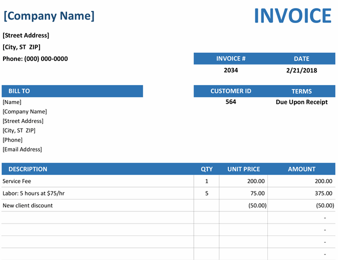 |
| 2 | Inventario | El total de bienes y materiales disponibles, incluyendo materias primas, trabajo en proceso y productos terminados. | 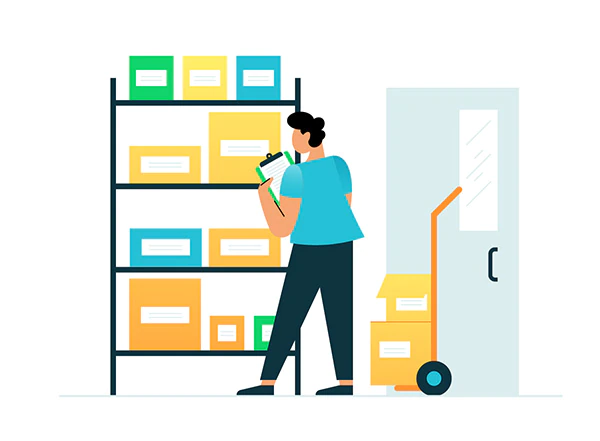 |
| 3 | Almacén | Una instalación utilizada para almacenar bienes y materiales, a menudo incluyendo muelles de carga, áreas de embalaje y oficinas. | 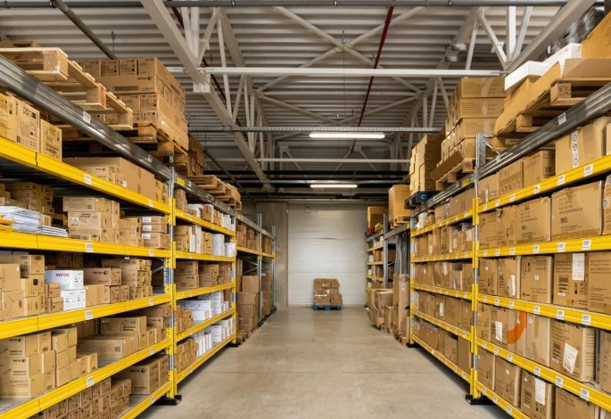 |
| 4 | Transporte | El movimiento de bienes de un lugar a otro, típicamente por camión, tren, barco o avión. | 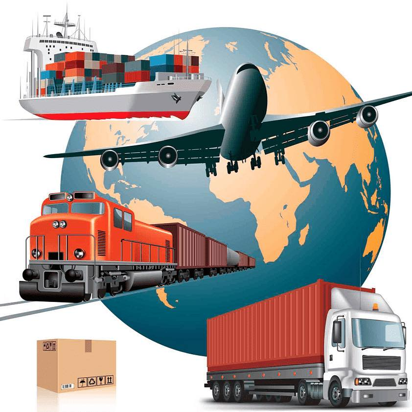 |
| 5 | Logística | El proceso de planificar, ejecutar y controlar el movimiento de bienes, información y recursos desde el punto de origen hasta el punto de consumo. | 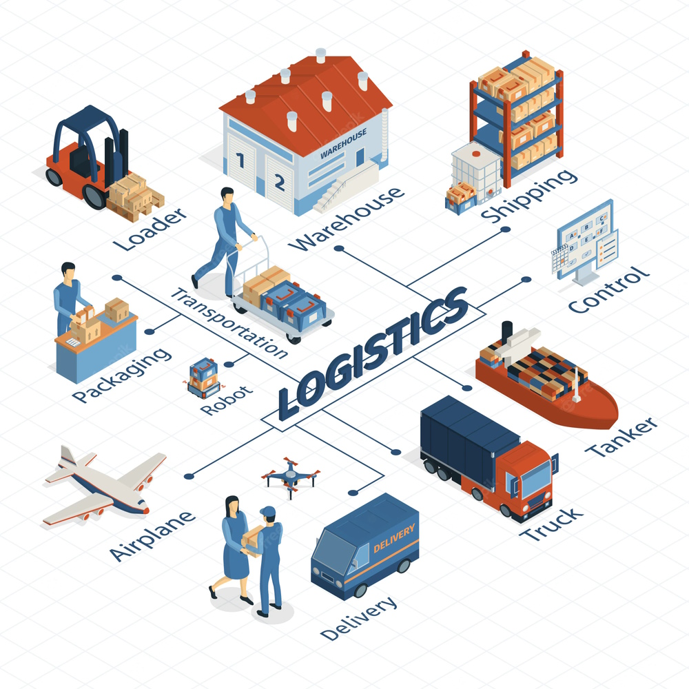 |
| 6 | Cadena de Suministro | Todo el proceso de producir y entregar un producto o servicio, desde las materias primas hasta el cliente final. | 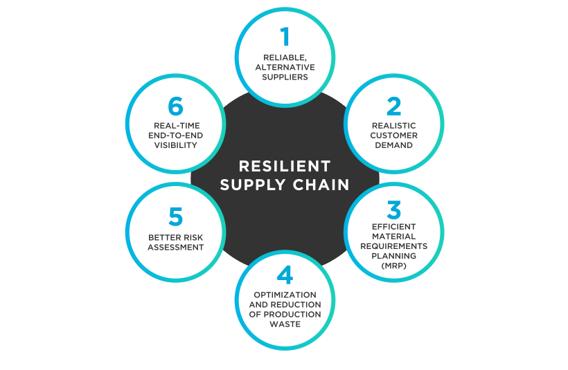 |
| 7 | Distribución | El proceso de llevar productos y materiales del almacén al cliente, incluyendo transporte, almacenamiento y entrega de bienes. |  |
| 8 | Optimización de Rutas | El proceso de encontrar la ruta más eficiente para entregar bienes, considerando factores como distancia, tiempo y costo. | 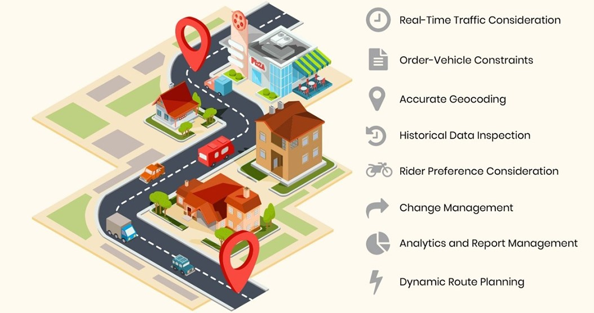 |
| 9 | Planificación de Capacidad | El proceso de determinar la cantidad de recursos (por ejemplo, mano de obra, equipos y espacio de almacenamiento) necesarios para satisfacer la demanda. | 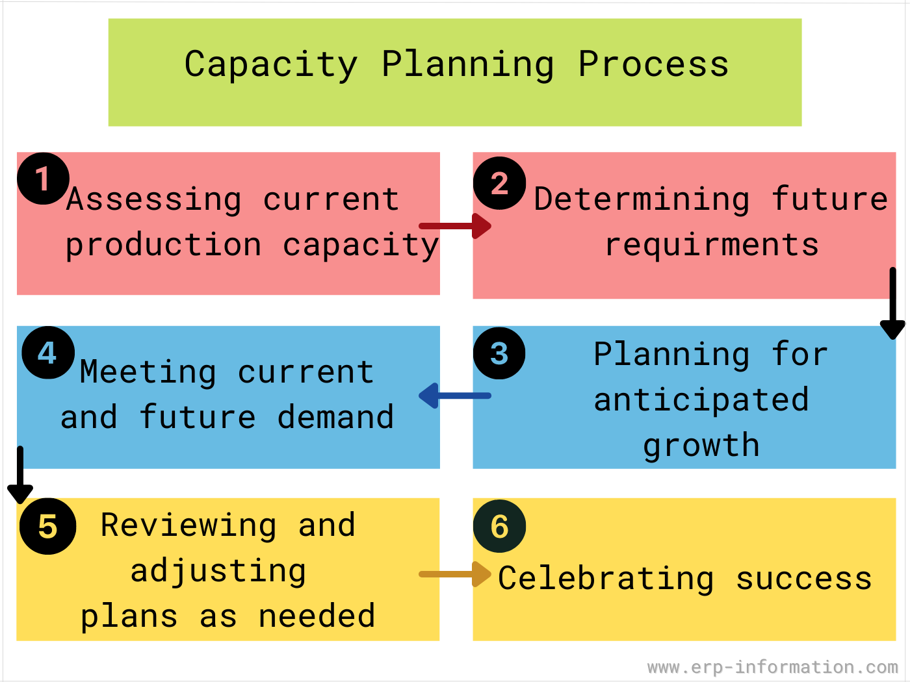 |
| 10 | Selección y Empaque | El proceso de seleccionar (picking) y preparar los bienes (empaque) para el envío, a menudo incluyendo la preparación de materiales de embalaje, etiquetado y documentación. | |
| 11 | Entrega | El proceso de transportar físicamente los bienes al cliente final, a menudo mediante el uso de camiones de entrega y personal de entrega. | |
| 12 | Logística Inversa | El proceso de gestionar el retorno o disposición de bienes, incluyendo la recolección, transporte y procesamiento de devoluciones, reparaciones y productos al final de su vida útil. | 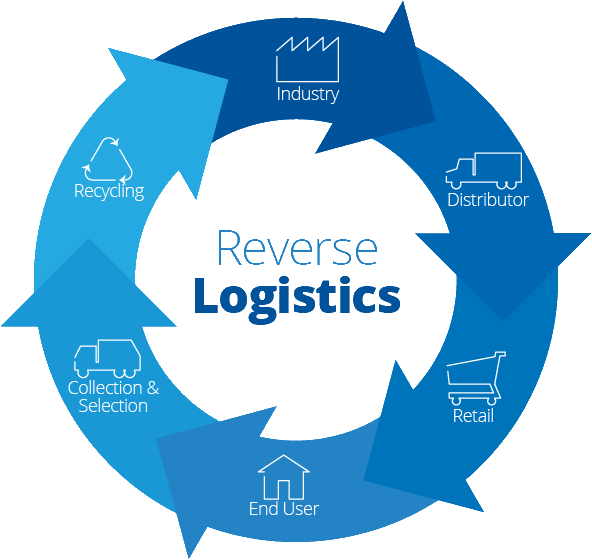 |
| 13 | Entrega Última Milla | La entrega última milla se refiere a la etapa final del proceso de entrega, en la que los productos se entregan al cliente final. Esto puede ser un aspecto particularmente desafiante de la logística, ya que requiere navegar por rutas de entrega complejas, coordinar con múltiples partes interesadas y gestionar las expectativas del cliente. | 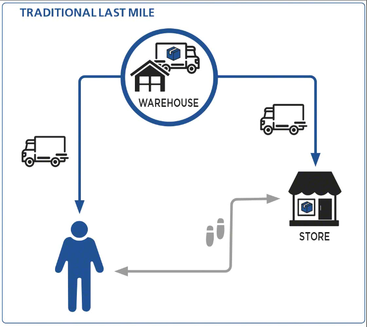 |
| 14 | Centro de Distribución | Una instalación utilizada para recibir, almacenar y distribuir productos a minoristas, mayoristas o directamente a los clientes. | 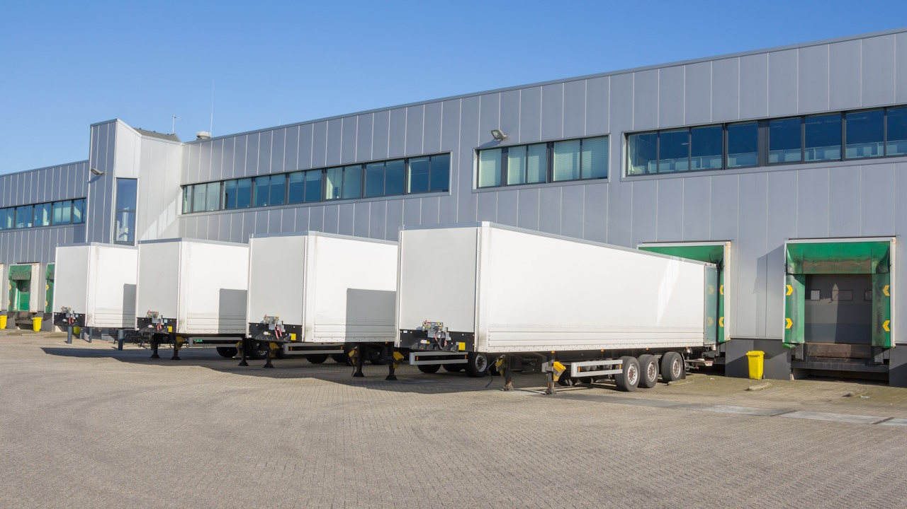 |
| 15 | Agente de Aduanas | Un profesional que ayuda en el despacho de mercancías a través de la aduana, asegurando el cumplimiento de las normativas de importación/exportación. | |
| 16 | RFID (Identificación por Radiofrecuencia) | Una tecnología que usa ondas de radio para identificar y rastrear objetos, comúnmente utilizada en la gestión de inventarios. | 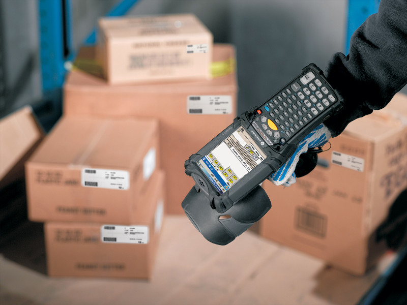 |
| 17 | Conocimiento de Embarque | Un documento legal que detalla el envío de bienes y sirve como evidencia del contrato de transporte. | 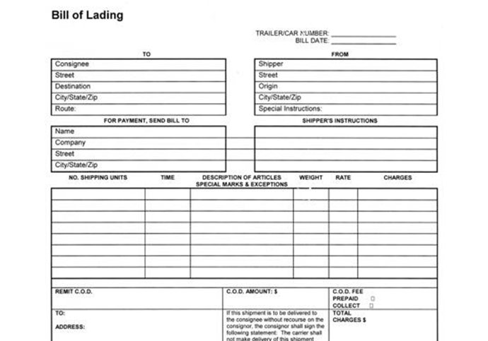 |
| 18 | 3PL (Logística de Terceros) | Empresas que proporcionan servicios de logística externalizados y cadena de suministro, incluyendo transporte, almacenamiento y distribución. | 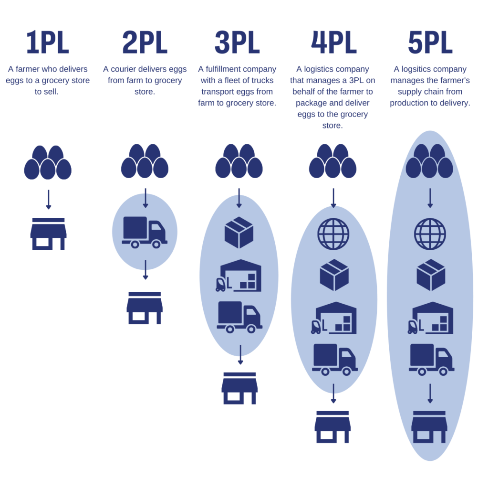 |
| 19 | Cross-docking | Una práctica logística donde los productos se transfieren directamente de transporte entrante a saliente sin ser almacenados en un almacén. | 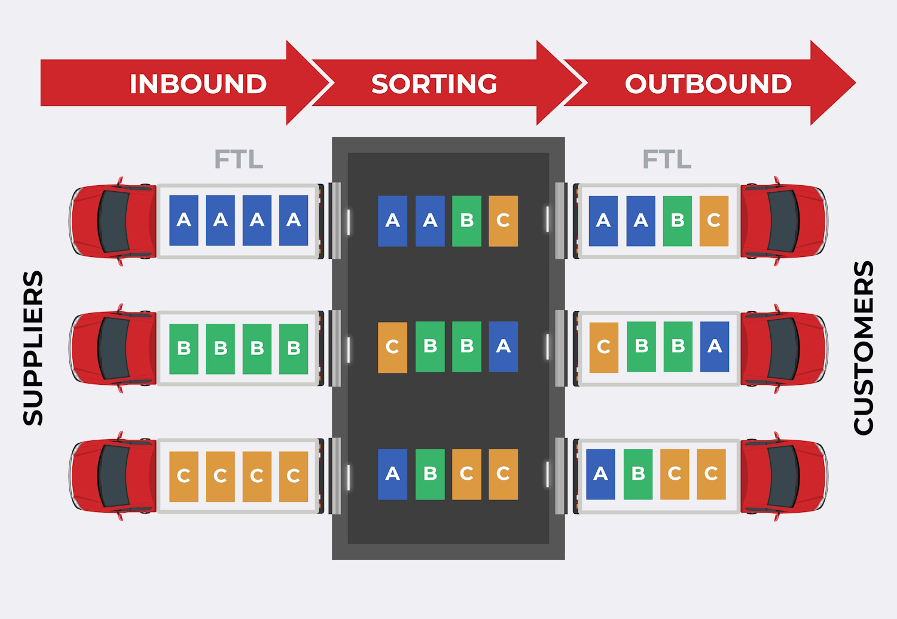 |
| 20 | Incoterms (Términos Internacionales de Comercio) | Términos estandarizados de comercio internacional que definen las responsabilidades de compradores y vendedores en un contrato. |